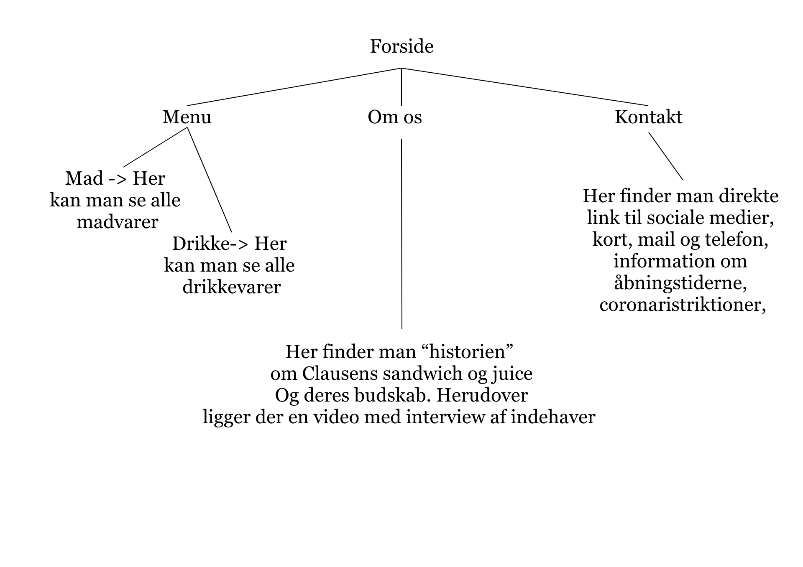
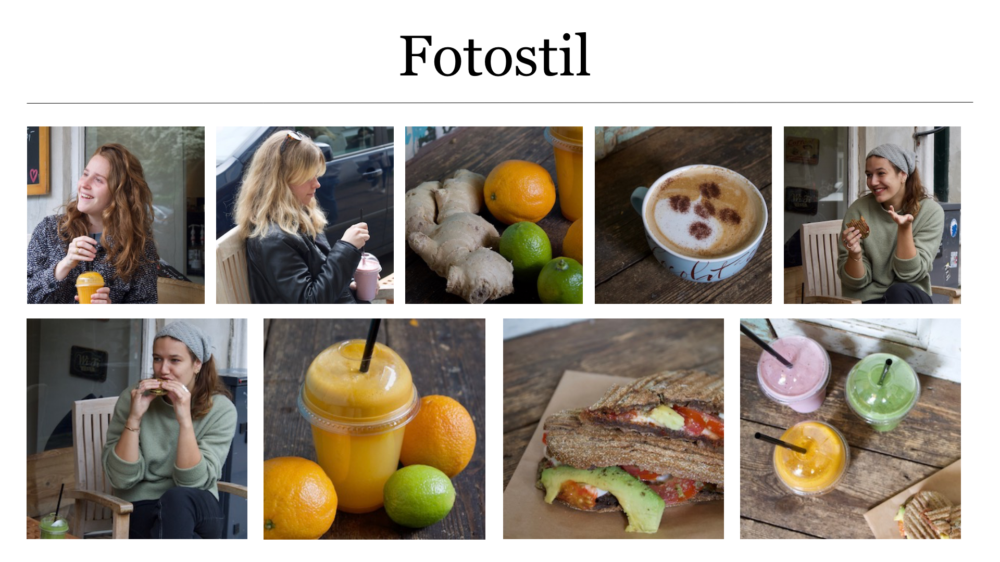
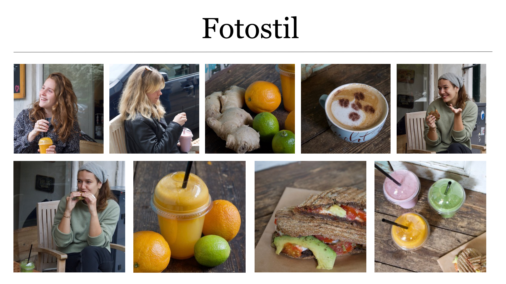
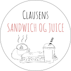
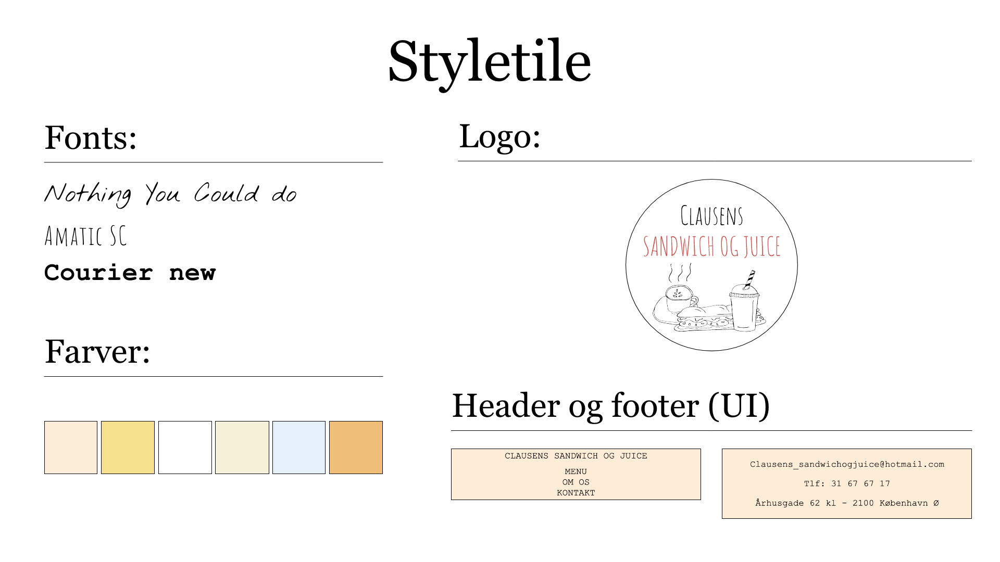
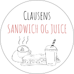
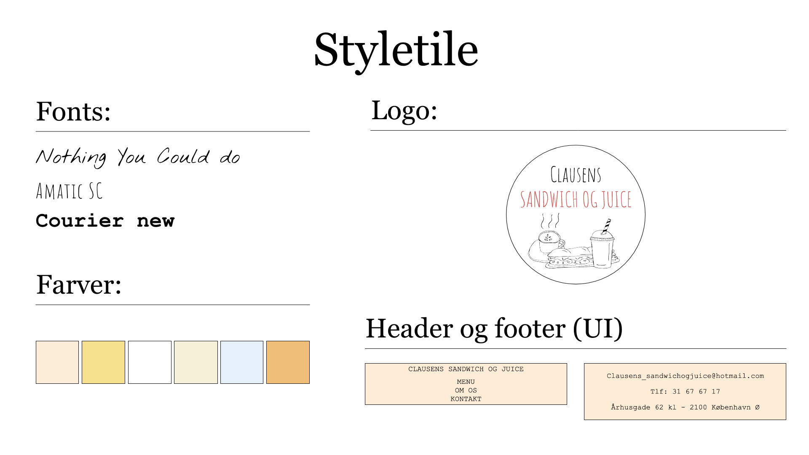

Tema- og opgavebeskrivelse
I temaet Grundlæggende Indhold fik vi introduktion og undervisning i Adobe programmerne Premiere Pro og Audition. I dette forløb havde vi to afleveringer. Den første 01_pilot var en delvis individuel aflevering for at afprøve vores evner inden for både videoproduktion og programmering, og så vi kunne undgå dumme fejl på den anden opgave som gik ud på at vi som gruppe skulle redesigne et eksisterende firmas website. Op til dette fik vi undervisning i grundlæggende video- og fotoproduktion og brugte forskellige tests til at undersøge hvad der skulle/kunne optimeres på det eksisterende site inden vi begyndte på vores redesign-opgave. Vi valgte også at bruge nogle af disse test-metoder til at undesøge om vi var nået i mål med vores ønskede redesign, her bl.a. eksperttest, 5-sek test, lighthousetest og ikke mindst BERT-test.
Refleksioner
Hvis jeg skulle lave noget i denne opgave ville jeg have valgt en anden virksomhed til redesign end den vi endte med at gå med i vores gruppe. Vi havde desværre en mindre god kommunikation mellem os og ejer og selve video- og fotoproduktionen gik ikke som vi ønskede. Derudover synes jeg at vi som gruppe skulle have struktureret vores tid og opgaver bedre da alle har forskellige prioriteter i hverdagen, trods at vi synes at vi nåede tilfredsstillende i mål med opgaven.
Dokumentation
I dokumentationen for tema 5 - Grundlæggende Indhold har jeg udvalgt det indhold jeg synes har været mest relevant for udarbejdelsen af temaopgaven. Der er link til hele vores dokumentationsdokument, sitemap for det færdige site, moodboard og fotostil, proces af tegninger tog logo, samt styletile for det endelige site.
 

 



Temaoversigt
Næste tema